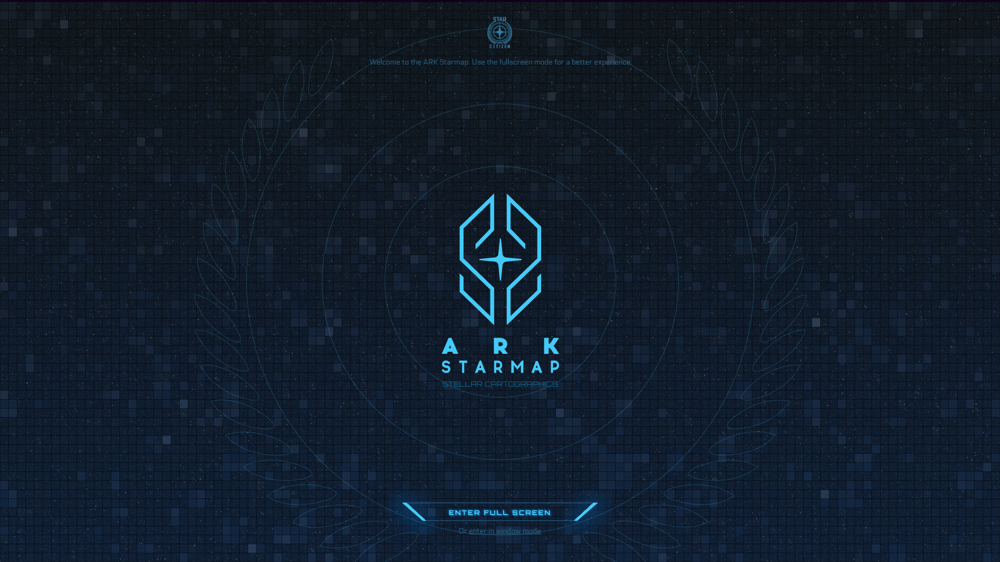

A Taste of Star Citizen's Scale
Learn about the ambitious scale Star Citizen hopes to achieve once the game is released.
ARK Starmap
 Explore and learn about the world of Star Citizen through an interactive map accessible through your browser.
Daymar Low Fly
Low-flying on Star Citizen is a fun and relaxing activity to do. The flight models for ships change in atmosphere, with top speed decreasing and fuel consumption increasing as your ship fights drag.
Architect Reviews an 890 Jump
Watch as a professional Architectural designer examines and critiques a luxury capital-sized space yacht.